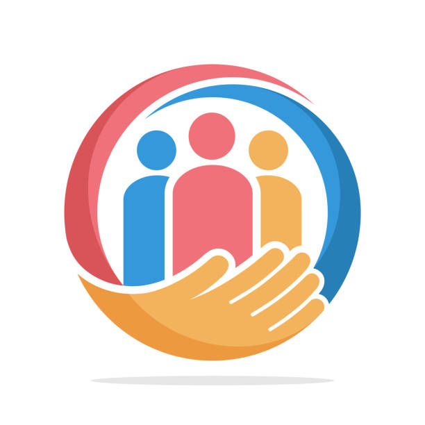
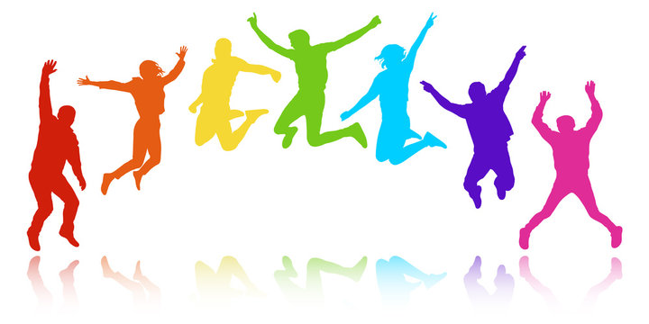
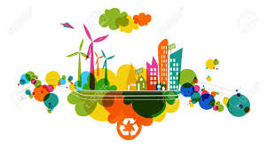

Volunteering
A culture built on volunteerism and solidarity fosters a society where respect for human values leads to collective well-being and lasting prosperity.
Youth
We focus on empowering young people—those with dreams, ideals, and hope. While changing the future may be challenging, the effort itself is worthwhile. As long as there are young individuals with vision, there is always hope for tomorrow.
Environmental Sustainability
The organization is committed to environmental sustainability, focusing on meeting current needs while safeguarding resources for future generations. Through responsible resource management and environmental protection, it promotes long-term ecological balance and sustainable development.
Sports and Dance
The organization promotes sports and dance as engaging tools for teamwork, discipline, and self-expression. Through non-formal education, participants develop coordination, resilience, and creativity while fostering social inclusion and active lifestyles.
Well-being
Overall well-being by reducing stress, boosting self-esteem, and strengthening social connections. These activities support mental and emotional health, ensuring a holistic approach to personal development.
Equality

We are committed to promoting equality by ensuring that every individual, regardless of their background, has access to the same opportunities and rights. By fostering an inclusive environment, we work to eliminate discrimination and promote fairness, empowering all people to thrive equally in society.